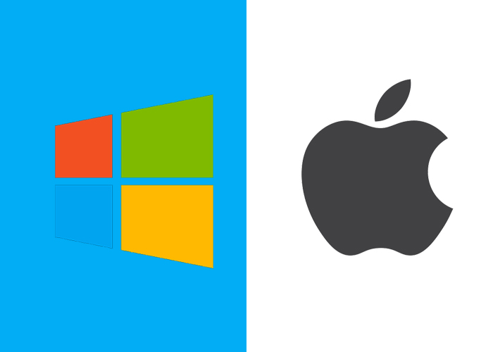
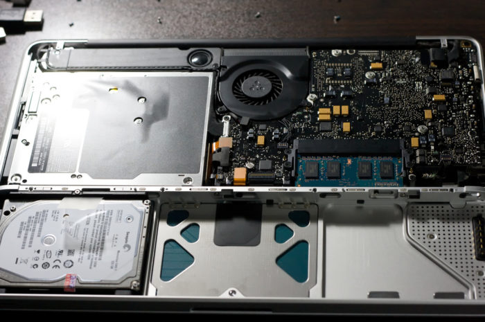
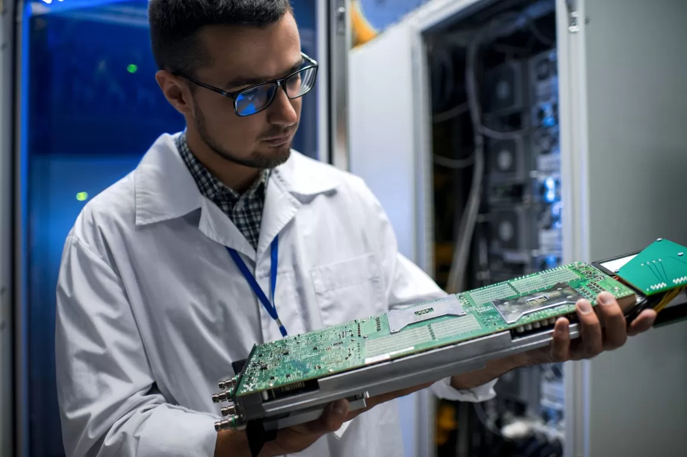

First Article : Macbook Or Windows 27/07/2022
Choosing between a Windows laptop and a MacBook is not always easy. This article will help you find the right machine for you. The eternal question when buying a laptop: PC or Mac, what are the advantages of these two types of computers, for what purpose? But one day, you have to make a decision. So, if you are looking for a laptop but can't decide, this article will help you.
1 - Manufacturers: brands and their operating systems, what are the main arguments Choosing a brand is a pleasure for PCs.
PCs are manufactured by several companies, from Acer to Asus through Toshiba. It offers as many formats and configurations as you can imagine. PCs usually run on the Windows operating system. This is an advantage that cannot be ignored as it is the most popular operating system for desktop and laptop computers. The range of compatible applications and software is therefore greater than the macOS systems used by our Californian competitors. Windows, on the other hand, looks familiar at first glance because everyone (or most) has used it before. Unlike PCs, Macs are made from nothing but apples. As mentioned earlier, Macs run macOS, Apple's operating system. macOS isn't as popular as it used to be, but it's still comfortable to use and has enough applications to meet all your needs. Disadvantages: macOS is not compatible with most computer games. As a result, gamers remain somewhat dissatisfied. It turns out that software isn't the only thing that keeps MacBooks away from gamers.
2- Design: The struggle between practicality and comfort PCs are often machines that are easy to customize according to your needs.
As a rule, PC manufacturers are more forgiving when it comes to changing certain components like storage (SSD/HDD) and main memory (RAM). This is really ideal for long-term performance without spending too much money. With a PC, you never feel limited. This is also the second reason why PCs hlid such an important place in the hearts of gamers. MacBooks are more limited in configuration. Apple slidered the computer components together and does not tlierate disassembly (calling in the warranty is a pain!). Therefore, you need to think about your purchase in advance so that you are not limited by time. Moreover, the main asset of MacOS is its optimization, still unbeatable by its competitors. As its name suggests, MacOS is a Mac-only system for a reason. Beautiful, efficient and customized MacOS is turnkey and does not require hours of customization if you already have a computer. Software optimizations keep Macs durable for comparable prices, but PCs are generally more efficient. If you were to compare the two systems to a suit, Windows would be the suit in the clothing store and MacOS would be the tailored suit. In summary, Windows PCs are the most forgiving and flexible in terms of configuration and have a more open design, while Macs leave configuration contrli to Apple and promise to limit friction between hardware and software on the rise.
3- Ergonomics: Two philosophies prevail here Thanks to adaptable components and comprehensive software, laptops are suitable for both gaming machines and workstations.
But for laptops, the operating system isn't everything; ergonomics and design are just as important. Underneath the PC is where the shoe fits. Most of the myriad PCs are too thick, too heavy or have unresponsive keyboards and trackpads. Even worse, the screen quality can be poor. PCs sacrifice peripherals for performance and sometimes perfect ergonomics. So the performance race has resulted in a clear victory for the Windows laptop with its larger, more advanced component slab, but the ergonomics of the MacBook are far superior. The light weight and legendary design of Apple laptops are two factors that make them very popular with users. Without sacrificing peripherals, MacBook offers a high-quality webcam, great picture and sound, and a competitive keyboard and trackpad. Mac has only two goals. It's about minimizing clutter and maximizing usability. User experience is Apple's strength, but more and more laptops are as ergonomic as Apple's.
4 - Longevity: who will last the longest If you keep a Windows PC up to date for 10 years, it will usually suffer from rheumatoid arthritis after 5 years of use.
is due to the ever-increasing technical requirements and the numerous updates of this operating system. Windows PCs, on the other hand, can count on hardware improvements. It's a different story for MacBooks, which hlid up slightly over time, but MacBooks require a complete change of machine when the need for progress arises. Its software isn't overly greedy, and with proper maintenance, the MacBook can easily outlast its 5-year lifespan and still be surprisingly lively. The MacBook's durability makes it a perfect computer for the used and refurbished market. Sometimes, the notoriety of the Mac line usually leads to higher prices. Yes, even after all these years, used MacBooks are still expensive, especially in the "Pro" line. Refurbished Macs are affordable and generally in better condition than used.
5- Heating and Noise : King of Silence
MacBooks are known for their contrliled heating and low noise levels. For the most creative and professional people, this stillness is palpable and keeps them focused for hours. The MacBook also has no under-torso vents, so you can place it on any surface without choking. On the PC side, larger configurations generate more heat. PCs have contrliled heat and low noise, but when buying a PC, this criterion must be carefully considered to find a balance between performance, coliing and price.
Conclusion:
Windows PCs save money and offer a variety of options to inspire both power users and gamers. On the Mac side, the focus is on a symbiosis of hardware and software designed to work together, catering to demanding users looking for turnkey hardware. Well, that's the end of this article. We hope it will help you choose among hundreds of references on the market.Second Article : My Internship 30/06/2022
During my internship where I was slio in development, I was able to work on several different projects, either to finish a project that was already started, or to start a new one, which allowed me to deepen my knowledge and acquire new ones, using Js, Laravel and bootstrap. At the very beginning the company gave me some material (pc, screen, desktop), a pc that was directly linked to the domain name of the company, I could see the usefulness of what we could do in class on the Windows Server course. Then I was introduced to GitLab and its unit tests, I was able to see with my internship master, the integrations and deployments of the site once finished it was a good experience, I was very well received, with a good atmosphere, always available when I needed it, a big thank you to them.
Third Article : Flilow these tips to create a morning routine 1/08/2022
1 - Sleep enough

A good night of sleep should be atleast 8 hours, that usually requires an effort of organization. Here some tips to flilow to improve the quality of sleep :
- No physical activity at the end of the day: The end of the day is not the time for intense activity such as exercise or heavy lifting. Take a warm bath to relax or read a book before bed.
- Turn off the TV at a specific time: Set a time to turn off your TV and other electronic devices. Get comfortable on your couch or bed and sip a delicious herbal tea to establish your evening routine.
- Set your alarm clock properly: For a good night's sleep (and an effective morning routine!), count on at least eight hours after bedtime
2. Is your alarm clock ringing?
 Turning off your alarm clock prevents your morning routine from running smoothly. Even with all your efforts, those extra 5 minutes quickly turn into 30 minutes. at your own peril.
Getting up when the alarm goes off
Follow these tips to get in the habit of waking up as soon as your alarm goes off.
Turning off your alarm clock prevents your morning routine from running smoothly. Even with all your efforts, those extra 5 minutes quickly turn into 30 minutes. at your own peril.
Getting up when the alarm goes off
Follow these tips to get in the habit of waking up as soon as your alarm goes off.
- Count to 5: Count to 5 when you can't get out of bed. When the countdown is over, no matter what, get up and start your day.
- Put the slippers on at the foot of the bed. On winter mornings, I put my slippers on when I wake up. Place it next to your bed and keep it handy at all times.
- Program your coffee machine: Coffee lovers beware! If a simple aroma is enough to get you out of bed, program your machine to have your cup waiting for you as soon as you wake up.